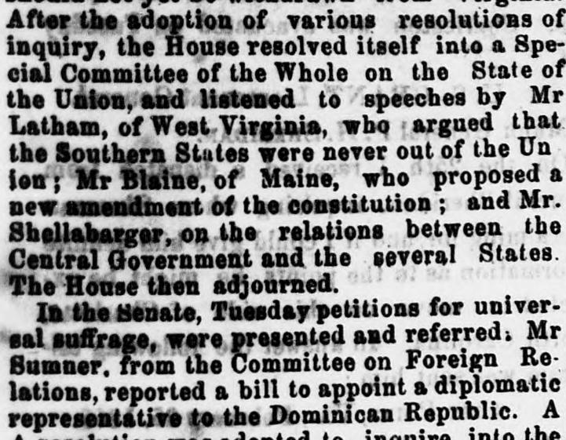
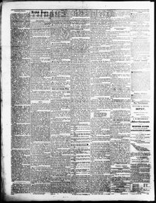

See the full pageVer la página completaA A resolution was adopted to inquire into the expediency ofSe adoptó una resolución para indagar acerca de la conveniencia de
On February 15, 1866, the Litchfield Enquirer reported that in the Senate on Tuesday, Mr. Sumner, speaking from the Committee on Foreign Relations, reported a bill to appoint a diplomatic representative to the Dominican Republic. Additionally, petitions for universal suffrage were presented and referred, a resolution regarding loyal citizens' quartermaster's stores was adopted, and the joint resolution for the Amendment of the Constitution was taken up.El 15 de febrero de 1866, el Litchfield Enquirer informó que el martes en el Senado el Sr. Sumner, en representación del Comité de Relaciones Exteriores, presentó un proyecto de ley para designar un representante diplomático ante la República Dominicana. Asimismo, se presentaron y remitieron peticiones a favor del sufragio universal, se adoptó una resolución relativa a los pertrechos de intendencia de ciudadanos leales y se debatió la resolución conjunta para la enmienda constitucional.
FULL TEXT:TRADUCCIÓN:
After the adoption of various resolutions of inquiry, the House resolved itself into a Special Committee of the Whole on the State of the Union, and listened to speeches by Mr. Latham, of West Virginia, who argued that the Southern States were never out of the Union; Mr. Blaine, of Maine, who proposed a new amendment of the constitution; and Mr. Shellabarger, on the relations between the Central Government and the several States. The House then adjourned.Después de la adopción de varias resoluciones de investigación, la Cámara se constituyó en Comité Especial Plenario sobre el Estado de la Unión, y escuchó discursos del Sr. Latham, de Virginia Occidental, quien sostuvo que los Estados del Sur nunca estuvieron fuera de la Unión; del Sr. Blaine, de Maine, quien propuso una nueva enmienda a la constitución; y del Sr. Shellabarger, sobre las relaciones entre el Gobierno Central y los diversos Estados. La Cámara levantó entonces la sesión.
In the Senate, Tuesday petitions for universal suffrage, were presented and referred. Mr. Sumner, from the Committee on Foreign Relations, reported a bill to appoint a diplomatic representative to the Dominican Republic. AEn el Senado, el martes se presentaron peticiones en favor del sufragio universal, y fueron remitidas. El Sr. Sumner, de la Comisión de Relaciones Exteriores, informó un proyecto de ley para nombrar un representante diplomático ante la República Dominicana. Un
Litchfield Enquirer. Litchfield, Conn., February 15, 1866.
See the original at the Library of CongressVer el original en la Biblioteca del Congreso
Published by: Henry Adams, 1829-Publicado por: Henry Adams, 1829-
Edition: Edition 1Edición: edición 1
Page: 2Página: 2
Frequency: weeklyFrecuencia: semanal
Collection: Chronicling America, Library of CongressColección: Chronicling America, de la Biblioteca del Congreso
LCCN: sn84020071LCCN: sn84020071
ISSN: 2770-3428ISSN: 2770-3428
OCLC: 10316028OCLC: 10316028
Call Number: Newspaper 7225-XSignatura (Call Number): Newspaper 7225-X
Rights: public domain, according to the Library of CongressDerechos: dominio público, según la Biblioteca del Congreso